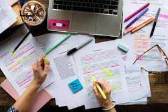

tesina
La tesina es un escrito monográfico, lo que quiere decir que es un estudio de un tema que se realiza de una forma concreta.
El objetivo de este escrito es demostrar que el estudiante conoce lo suficiente de un tema en particular y puede comunicar sus conocimientos de una forma coherente y clara.
También se podría decir que es como una prueba para verificar que el estudiante ha aprendido lo que se esperaba de él en dicha área de estudio.
Para que este escrito sea aprobado, el estudiante debe trabajar con un asesor y presentarlo ante un grupo de especialistas en el tema. Esto implica una defensa oral y pública para obtener dicha aprobación.
Para finalizar con lo anterior mencionado, para que la tesina sea aceptable es importante que se tenga la información más reciente y suficiente sobre el tema. También debe de tener una argumentación detallada, clara y que no contenga errores de sintaxis o faltas de ortografía.
La tesina es un estudio específico sobre un tema para demostrar los conocimientos del estudiante. Requiere la guía de un asesor y una defensa oral ante un grupo de especialistas para ser aprobada. Es importante tener información actualizada y una argumentación clara sin errores.
|
|
|
|---|---|
|  |